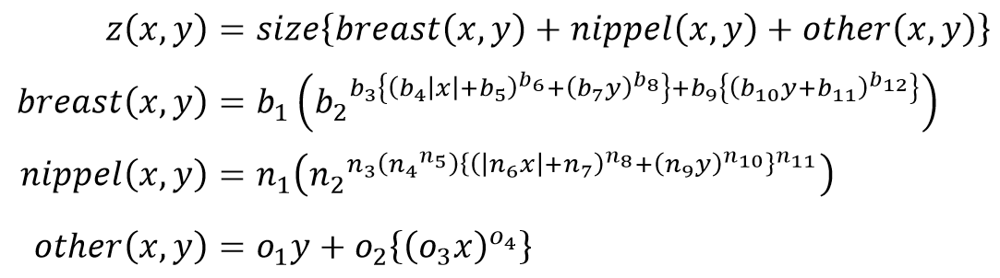

b1:
b2:
b3:
b4:
b5:
b6:
b2:
b3:
b4:
b5:
b6:
b7:
b8:
b9:
b10:
b11:
b12:
b8:
b9:
b10:
b11:
b12:
n1:
n2:
n3:
n4:
n5:
n6:
n2:
n3:
n4:
n5:
n6:
n7:
n8:
n9:
n10:
n11:
n8:
n9:
n10:
n11:
size:
o1:
o2:
o3:
o4:
o1:
o2:
o3:
o4:
z軸表示域 最小値:
z軸表示域 最大値:
z軸表示域 最大値:
元ネタ
天才ですね.
おっぱいの方程式を発見したよ！ pic.twitter.com/nM2rtxXC
— しもまっしぐま (@shimoMathSiGMA) 2011年11月6日
パラメータについて
曲面方程式はしもまっしぐまさんが挙げていたのでそのまま使わせていただきました.
方程式を眺めて以下の方程式に分解しました.パラメータを調整できるようにするため,とりあえず変数にできそうなところは変数にしました.

なにも考えないで変数にしたので,べき指数あたり(初期値が2のところ)はあまりいじらない方がいいはずです.
方程式からわかるようにb1～b12をいじると乳房が,n1～n12をいじると乳首が,o1～o4をいじると体格が,sizeをいじるとサイズがかわります. (本当は'other'を'body'にしたかったのですが,'breast'の'b'と被るのでやめました.)
パラメータ調整の例として,size=0.05にするといい具合に平らになります.(ロリコンほいほいですね)
その他
グラフ表示にはplotly.jsを使わせていただきました.